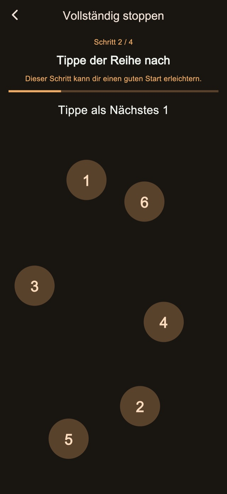
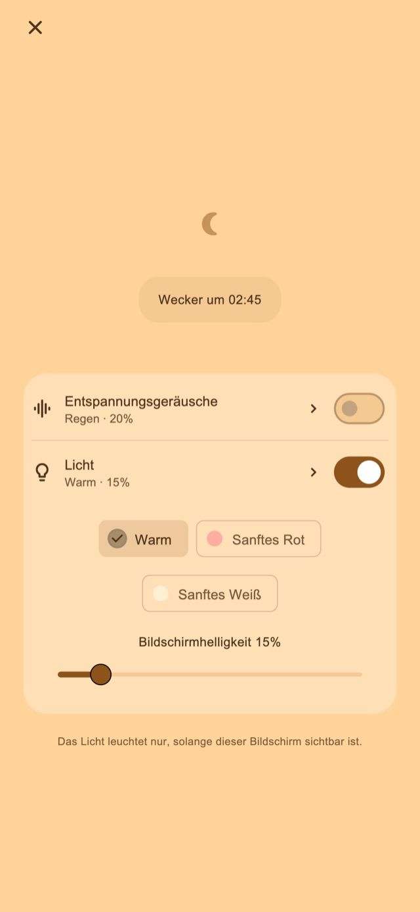

Entspannungsgeräusche
Höre Regen, Wellen oder weißes Rauschen. Audio startet nur, wenn du es einschaltest, und blendet zum ersten Alarm aus.
Vibrationswecker für Nickerchen und nach der Einschlafbegleitung
Für alle, die beim Nickerchen oder beim Einschlafbegleiten selbst weiterschlafen.
01Vibrationsmuster
Wechselnde Länge und wechselnder Rhythmus fühlen sich anders an als alltägliche Benachrichtigungen. Dieses ungewohnte Gefühl soll dir helfen, den Alarm zu bemerken und aufzuwachen.
Kurze Impulse, lange Impulse und schnelle Folgen. Vier Grundmodi stehen bereit: Zufall, Benachrichtigungsmix, überwiegend lang und überwiegend kurz. Dauer und Abstände wechseln für mehr Abwechslung. Probiere die Muster vor dem Stellen aus.
Vibrationsmuster
02Mehrere Hinweise
Stoppe nur den aktuellen Hinweis und behalte die nächsten, oder beende die Serie, um den Rest zu löschen.
Das Speichern von Anzahl und Abstand ist eine Premium-Funktion.
Mehrere Hinweise
Nach dem Aufstehen beenden
03Aufgaben zum Stoppen
Rechnen, Zahlen der Reihe nach antippen, gedrückt halten und wiederholt tippen begleiten Stoppen und Schlummern. Die Standardschritte sind enthalten. Zum Bearbeiten und Kombinieren der Schritte brauchst du Premium.

Nachtbildschirm
Passe Helligkeit und Uhranzeige an. Die Anzeige kann nach kurzer Inaktivität verschwinden. Durch Antippen werden Uhr und Bedienelemente wieder sichtbar.
Wähle eine Dauer, etwa 30 Minuten, oder eine Aufstehzeit.
Lass den Nachtbildschirm geöffnet. Schalte Klänge oder Licht bei Bedarf ein.
Erledige die Stoppschritte und beende die Serie, wenn du aufgestanden bist.
Entspannende Klänge und Licht
Für Nickerchen oder die Einschlafbegleitung. Schalte beides bei Bedarf auf dem Nachtbildschirm ein.
Höre Regen, Wellen oder weißes Rauschen. Audio startet nur, wenn du es einschaltest, und blendet zum ersten Alarm aus.
Wähle warmes, blassrotes oder sanftweißes Licht und passe die Helligkeit an.
Die Grundfunktionen sind kostenlos

Kostenlos / Premium
Vier Vibrationsmodi, Standard-Stoppen und Schlummern, Nachtbildschirm, Klänge und Licht sind enthalten. Einige Ansichten zeigen Werbung.
| Funktion | Kostenlos | Premium |
|---|---|---|
| Vibrationsmuster | ✓ | ✓ |
| Mehrere Hinweise | Standard | Anpassbar |
| Aufgaben zum Stoppen | Standard | Anpassbar |
| Nachtbildschirm / Entspannungsgeräusche / Licht | ✓ | ✓ |
| Eigene Vibrationsmuster erstellen und bearbeiten. | — | ✓ |
| Sämtliche Werbung entfernen. | — | ✓ |
Wähle einen Monatsplan oder Einmalkauf. Der Monatsplan verlängert sich automatisch und lässt sich in den Kontoeinstellungen des Stores verwalten oder kündigen. Preise und Bedingungen findest du vor dem Kauf.
Häufige Fragen
Für eigene Vibrationsmuster muss der Nachtbildschirm nach dem Stellen geöffnet bleiben. Wenn du mit der Seitentaste sperrst oder die App wechselst, übernimmt iOS die Vibration; dein gewähltes Muster und die Stärke gelten dann nicht. Prüfe Berechtigungen und Vibrationseinstellungen und führe vor der Nutzung den Funktionstest aus.
Höre Regen, Wellen oder weißes Rauschen. Audio startet nur, wenn du es einschaltest, und blendet zum ersten Alarm aus. Wähle warmes, blassrotes oder sanftweißes Licht und passe die Helligkeit an.
Vier Vibrationsmodi, Standard-Stoppen und Schlummern, Nachtbildschirm, Klänge und Licht sind enthalten. Einige Ansichten zeigen Werbung. Sämtliche Werbung entfernen. Anzahl und Abstand der Hinweise ändern. Stopp- und Schlummerschritte bearbeiten. Eigene Vibrationsmuster erstellen und bearbeiten. Wähle einen Monatsplan oder Einmalkauf. Der Monatsplan verlängert sich automatisch und lässt sich in den Kontoeinstellungen des Stores verwalten oder kündigen. Preise und Bedingungen findest du vor dem Kauf.
Laden
Vibrationswecker für Nickerchen und nach der Einschlafbegleitung
Die Grundfunktionen sind kostenlos
iPhone: iOS 26.1+ / Android: 8.0+